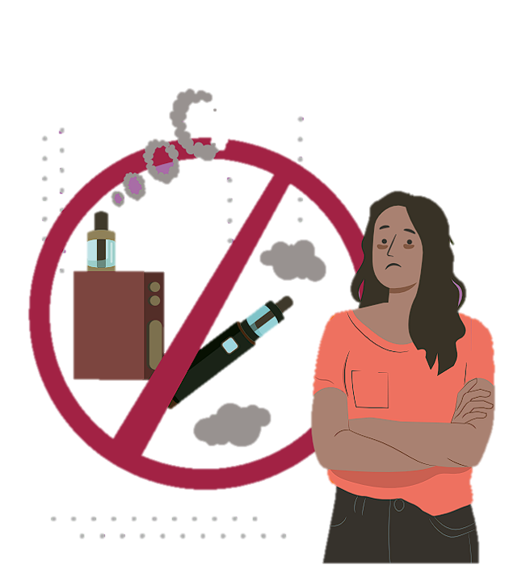

PROPÓSITO
Dar a conocer las características de los vapeadores o cigarrillos electrónicos, los daños irreversibles a
la salud y los impactos negativosalrededor de su uso.
¿QUE ES?
Los vapeadores (cigarrillos electrónicos o e-cigs) son dispositivos electrónicos que administran
nicotina, sustancia psicoactiva
estimulante y con un alto potencial adictivo. Estos dispositivos
incluyen un cartucho desechable
o recargable que es calentado
para permitir la inhalación de un
líquido compuesto por nicotina,
formaldehído, propilenglicol, saborizantes y aromatizantes.
Existen dos tipos de dispositivos:
los Sistemas Electrónicos de Administración de Nicotina (SEAN)
y los que no contienen nicotina.
Al usar estos dispositivos es difícil
definir la dosis de nicotina que se
consume en cada inhalación porque depende de la forma en que
cada persona utilice el vapeador,
lo cual vuelve esta práctica muy
riesgosa.
Se tiene la creencia de que el uso
de vapeadores no conlleva un
grave riesgo para la salud porque
el porcentaje de nicotina que introducen al cuerpo es menor. Sin
embargo, las personas usuarias
de vapeadores que padecen tabaquismo presentan un fenómeno
“compensatorio”, es decir, aumentan el número de inhalaciones
para recibir la dosis de nicotina a la
que están acostumbradas.
La industria tabacalera desarrollóestos productos como auxiliares
para dejar de fumar. Actualmente,
no hay suficiente evidencia documentada que demuestre la efectividad de los vapeadores. Por el contrario, se ha reportado que estos
productos generan dependenciarápidamente, por su sabor agradable y la baja percepción de riesgo.
Además, estas empresas utilizanviejas prácticas de mercadotecniadirigidas a adolescentes y personas
jóvenes para engancharlas, sin reparar en las consecuencias.

Modo de Consumo
Existe una amplia variedad de vapeadores. Los SEAN se comercializan en forma de cigarrillos
cigarros, puritos, pipas o narguiles; otros tienen la forma de objetos
del día a día como bolígrafos, lápices, USB y dispositivos cilíndricos o prismáticos.
La cantidad de nicotina que consume una persona a través de los SEAN depende de factores como
la duración de la calada, la profundidad de la inhalación y la frecuencia de uso
Efectos durante su consumo
El uso de vapeadores con o sin nicotina genera una percepción de relajación.
Sin embargo, algunos daños relacionados son vómitos, mareos, irritación ocular, en boca y en nariz.
Efectos Físicos
La mayoría de las personas que usan los SEAN regularmente son dependientes de la nicotina, la
cual genera ligeros efectos estimulantes, aumento de la frecuencia cardiaca y de la presión arterial.
En dosis altas y con un consumo prolongado puede ocasionar un infarto al corazón y la muerte.
Los SEAN también se han relacionado con algunas lesiones físicas,
como quemaduras por explosiones o mal funcionamiento de los
productos o porque son manipulados equivocadamente. Sin embargo, la exposición accidental a
concentraciones muy altas de nicotina a través del líquido del vapeador puede ser muy peligrosa e
incluso provocar la muerte.
Los beneficios para la salud al detener el consumo de nicotina
suministrada por medio de los vapeadores pueden percibirse en cuestión de horas o minutos. El
abandono de la nicotina contribuye a modular la frecuencia cardiaca y la presión arterial el mismo día
que se detiene su consumo. A los tres meses de dejar de vapear, la circulación y la función pulmonar
mejoran y, en un plazo de nueve meses, disminuye la tos y la dificultad para respirar.
Vapear tiene graves implicaciones en la salud de las personas, sobre todo, en adolescentes y jóvenes, ya
que el inicio en este consumo está asociado al uso de otros productos como tabaco y cannabis.
Las y los adolescentes y jóvenes integran la población de mayor riesgo de uso de estos dispositivos, debido a la atracción por la forma
de inhalar de los vapeadores. Además, su utilización tiene una alta
aceptación social, lo cual enmascara los verdaderos daños a la salud y el desarrollo de adicciones.
La nicotina consumida a través de estos productos representa daños
para la salud de niñas, niños y adolescentes, ya que causa efectos nocivos en el desarrollo del cerebro.
Las consecuencias a largo plazo son trastornos de aprendizaje y ansiedad.
Principales riesgos para la salud
El uso de vapeadores, con y sin nicotina, provoca lesiones en el tejido del sistema respiratorio, principalmente en las vías respiratorias
altas. Asimismo, disminuye la cantidad de oxígeno en la respiración
de personas que eran no fumadoras y vapearon.
El vapeo con consumo de nicotina está asociado a dolores abdominales, diarrea e infecciones en vías
respiratorias altas. La exposición continua al sobrecalentamiento de los productos ocasiona heridas en la piel como quemaduras,
dermatitis y lesiones en boca y garganta. Se ha documentado que el uso de vapeadores está
relacionado a la presencia de características del síndrome metabólico, disminución de insulina
en la sangre y fallas en el corazón.
El inicio de consumo de tabaco o nicotina en la adolescencia suele provocar dependencia de esta sustancia en años posteriores. Las y los
adolescentes y jóvenes que inician el uso de vapeadores tienen una probabilidad entre dos y tres veces
mayor de consumir regularmente cigarrillos convencionales que las personas que no lo hacen.
Entre adolescentes, principalmente estudiantes de secundaria, el uso de vapeadores alguna vez en
la vida se correlacionó con una mayor probabilidad de consumo excesivo de alcohol. La edad es
un factor de riesgo, ya que a menor edad de inicio en el vapeo, la probabilidad de consumir alcohol incrementa.
La asociación también se ha encontrado a la inversa, es decir,
las y los adolescentes consumidores de alcohol son más susceptibles a convertirse en fumadores o vapeadores.
¡NO TE ARRIESGUES CON LAS DROGAS!
Ten presente que:
• Los aerosoles producidos al inhalar estos dispositivos contienen compuestos tóxicos y pueden ser cancerígenos.
• La popularidad de los SEAN está fuertemente asociada a
motivos sociales y la búsqueda de aceptación en un grupo.
• Aún no hay suficiente evidencia documentada que demuestre la efectividad de los vapeadores para dejar de fumar.
Consecuencias legales
Desde el 31 de mayo del 2022 se prohibió la comercialización de vapeadores, SEAN y cualquier dispositivo con usos similares en todo
el país. De esta manera, la venta y adquisición de estos productos tendrá una sanción jurídica en
cualquier estado de la república mexicana. Las multas van desde 150,000 hasta 300,000 pesos por su decomiso.